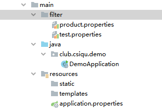
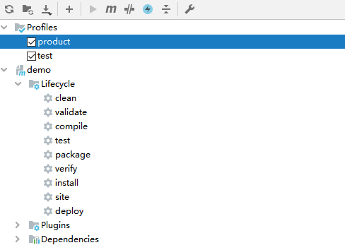

通常生产环境和测试环境的相关配置是完全不一样的，我们可以通过Maven的filters针对不同的环境进行打包，配合持续部署。
目录结构

product.properties：
Maven配置
1
2
3
4
5
6
7
8
9
10
11
12
13
14
15
16
17
18
19
20
21
22
23
24
25
26
27
28
29
30
31
32
33
34
35
36
37
| <profiles>
<profile>
<id>product</id>
<properties>
<env>product</env>
</properties>
<activation>
<activeByDefault>true</activeByDefault>
</activation>
</profile>
<profile>
<id>test</id>
<properties>
<env>test</env>
</properties>
</profile>
</profiles>
<build>
<plugins>
<plugin>
<groupId>org.springframework.boot</groupId>
<artifactId>spring-boot-maven-plugin</artifactId>
</plugin>
</plugins>
<filters>
<filter>src/main/filter/${env}.properties</filter>
</filters>
<resources>
<resource>
<directory>src/main/resources</directory>
<filtering>true</filtering>
</resource>
</resources>
</build>
|
项目配置文件
项目配置文件中使用占位符：

这时候使用mvn clean package -P [profile id] 命令就可以进行不同环境下的打包。